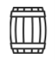
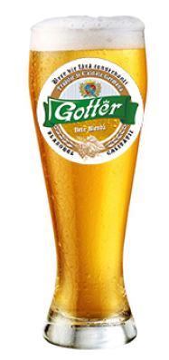
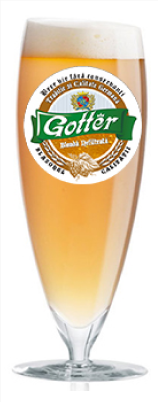
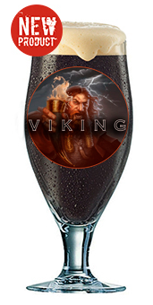
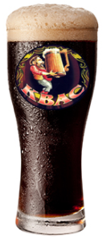

Bere VieDin timpurile vechi Bere vie este renumită din cauza proprietăților sale utile. În componența berei vie intră un număr mare de elemente folositoare, cum ar fi calciu, mangan, fosfor și fier.

Este o bere blondă, preparată din soiuri selecționate de hamei și malț ceh. Are gustul și aroma plăcută a unei băuturi de malț fermentat cu amărăciune de hamei.
Blondă – alc. 4.5 %, extract. 12.7%

Este o bere blondă nefiltrată, preparată din soiuri selecționate de hamei și malț ceh. Are gustul și aroma plăcută a unei băuturi de malț fermentat cu amărăciune de hamei.
Blondă – alc. 4.5 %, extract. 12.7%

Această bere brună, în ciuda caracteristicilor conținutului de alcool și a procentului de extract are un gust foarte ușor, cu o aromă plăcută de caramel.
Ale – alc. 5.5 %, extract. 15.0%

Procesul de fabricare este realizat prin fermentarea a produselor naturale. Datorită combinației armonioase de ingrediente minerale naturale și a tehnologiei originale de preparare, cvasul are nu numai un gust foarte plăcut dar și calități nutriționale înalte.
Cvas – alc. 0.6 - 1.0 %